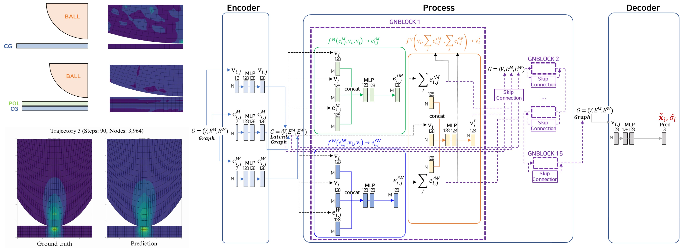

Generative Design과 MeshGraphNet을 활용한 패널 적층 구조 최적화 요소 기술 개발
Optimization of Panel Layered Structures Using Generative Design and MeshGraphNet
LG Display · May 2022 – Feb. 2023

Overview
POLED 모바일 패널의 적층 구조 최적화는 Ball Impact 해석을 통한 박막 두께·재료 결정이 핵심이지만, FEA 기반 구조 동역학 해석은 시간이 오래 걸린다. 본 과제는 MeshGraphNet(MGN)을 패널 적층 구조에 확장해, 단일 재료부터 복합 재료 다층 패널까지 거동·응력을 예측하는 surrogate 모델을 개발하고 ANSYS 대비 80% 이상의 응력 정확도 확보를 목표로 한다.
My Role
- 역할: 실무책임자(KAIST 박사과정) — 모델 개발 및 학습 전 과정 주도
- ANSYS Explicit Dynamics 해석으로 학습 데이터 자동 생성 파이프라인 구축
- MGN 아키텍처를 단일 재료 → 복합 재료 다층 구조로 확장
- 최대 응력 정확도 평가 및 시각화 자동화
Methodology
(1) 데이터 생성: ANSYS hyperelastic 해석으로 quadrilateral mesh, irregular meshing, Δt=1e-6 조건의 Ball Impact 시뮬레이션을 자동 수행해 trajectory 데이터셋(60–90 step, 3,370–8,561 nodes) 확보.(2) 모델 아키텍처: Encoder–Process–Decoder 구조의 GNBLOCK 15층, message passing 15회로 다중 trajectory 학습. 입력은 노드 속성·세계 좌표·접촉 정보, 출력은 가속도·응력.(3) 평가: 단일 재료(PVC, Polyethylene) → 복합 재료 적층 패널까지 단계적 검증.
Results / Key Outcomes
- 복합 재료 거동/응력 예측 가능한 GNN 모델 아키텍처 개발
- 상용 솔버(ANSYS, Abaqus) 대비 패널 최대 응력 정확도 80% 이상 달성
- 여러 trajectory(다양한 충돌 시나리오)에 대한 일반화 성능 확보
- 본 결과는 후속 연구(BMO-GNN, Physics-constrained GNN)와 연계되어 학술 성과로 발전